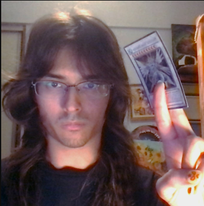

The sound of Now and that is to come, The screaming id of the the internet begging to
be born. A lot of the artists at the vanguard of hyperpop which, to crudely summarise, is music that pushes
the most sugary, euphoric aspects of pop music to the extreme are moving.
SEBii is a weird pick for this list being that he is a more of classic pop artist BUT, ((atleast acording to
me)) he does posses in himself that germ of hyperpop that is so ellsuive and hard to define. His origins follow
the tracks of a classic hyperpop artist and its very much audible in his work. His tempo and a novel use of
autotune to create a truly unique sound realy set him apart in the crowded hyperpop scene. Also hes efortlessly
halarious and its never unintentional. SEBii understands his audiance and capable of making fun of himself
without it feeling self deprecating, a great weilder of irony. The lyrics have a structure of a ironic joke,
they are designed to be memetic.
BOTTOM line, i find him funny and i really like his music

The Hits...
we plunge...
How do i describe a wells? for it is distilled ethereal. Her music overwhelms with sound BUT not to the same
effect as others in the scene. a blunt division would seperate her song into two categories the ethereal and the
manic. The etheral is more of what you feel than what you hear. just close your eyes and breathe out and still
your mind and allow it pervade you. never have i heared music so etheral that has made want to scream my lungs
out.
the manic uses the same tools as the etheral to produce a similar all prevading effect that it subsumes the mind
yet it does not let you rest. The beat is always rising, the crecsendo just a few seconds off and like a wave
when it falls upon you it washes you away throwing you ariunbd in its structure again one is asked to just close
their eyes and breathe out and still thier mind and allow it pervade them.
The Hits...
and deeper we go...
WOOO YEAGHH FRAXIOM!! god i love them so much, such an absolute vibe. the great drive to a meesy queer,
i dont even think i have any analyisis here except pure adoration and love ARHHHHH!!!
i am boping i am moving i am scmoving i see someone live out the life i so despeately crave and, for the first
time, feel not an inkiling of jelousy. oh i just straignht up wanna be them, i love them so much its unreal OMG.
The Hits...
Turn back not now...
i will die, They will be the death of me. i have wept, cried a thousand chrimson tears. GOD in his infinite
cruelty denied me. like a prophet blinded by the vison of GOD, was my first encounter with Dorian
i am boping i am moving i am scmoving i see someone live out the life i so despeately crave and, for the first
time, feel not an inkiling of jelousy. oh i just straignht up wanna be them, i love them so much its unreal OMG.